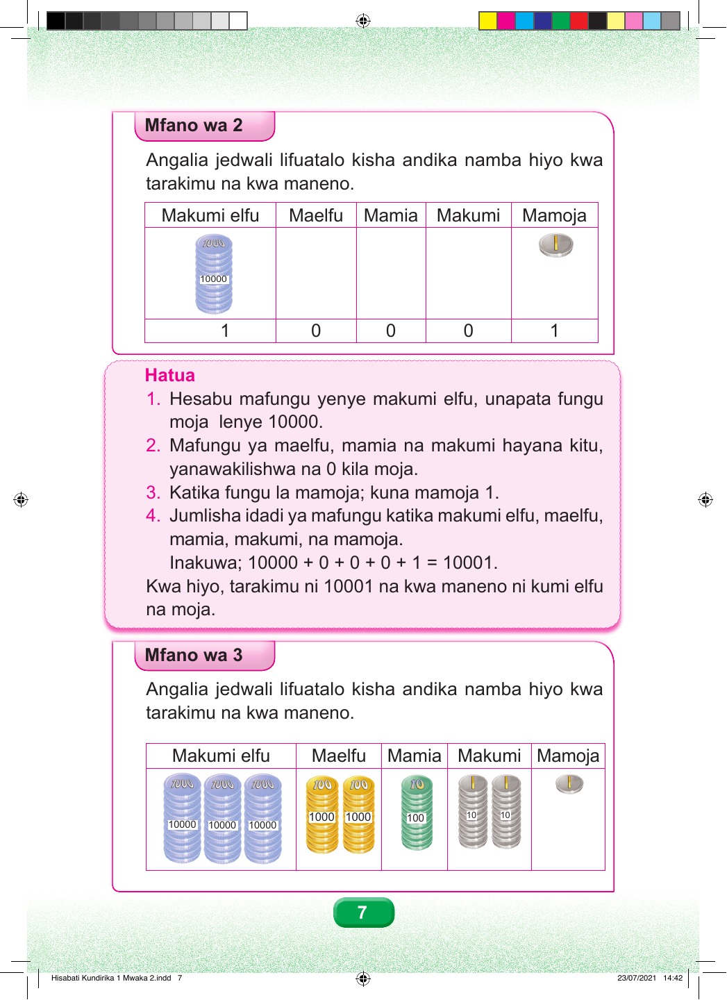

Mfano wa Pili Angalia au bainisha jedwali, kisha taja na uandike namba kwa tarakimu na kwa maneno. Makumi elfu. Maelfu. Mamia. Makumi. Mamoja. Jedwali lina fungu moja la makumi elfu na sarafu moja ya mamoja. Safu za maelfu, mamia na makumi zimeandikwa sifuri. Makumi elfu Maelfu Mamia Makumi Mamoja 10000 1 0 0 0 1 Hatua 1. Hesabu mafungu yenye makumi elfu, unapata fungu moja lenye 10000. 2. Mafungu ya maelfu, mamia na makumi hayana kitu, yanawakilishwa na 0 kila moja. 3. Katika fungu la mamoja; kuna mamoja 1. 4. Jumlisha idadi ya mafungu katika makumi elfu, maelfu, mamia, makumi, na mamoja. Inakuwa; 10000 + 0 + 0 + 0 + 1 = 10001. Kwa hiyo, tarakimu ni 10001 na kwa maneno ni kumi elfu na moja. Mfano wa Tatu Angalia au bainisha jedwali, kisha taja na uandike namba kwa tarakimu na kwa maneno. Makumi elfu. Maelfu. Mamia. Makumi. Mamoja. Jedwali lina mafungu matatu ya makumi elfu, mafungu mawili ya maelfu, fungu moja la mamia, mafungu mawili ya makumi na sarafu moja ya mamoja. Makumi elfu Maelfu Mamia Makumi Mamoja 1000 1000 100 10 10 10000 10000 10000 7 Hisabati Kundirika 1 Mwaka 2.indd 7 23/07/2021 14:42